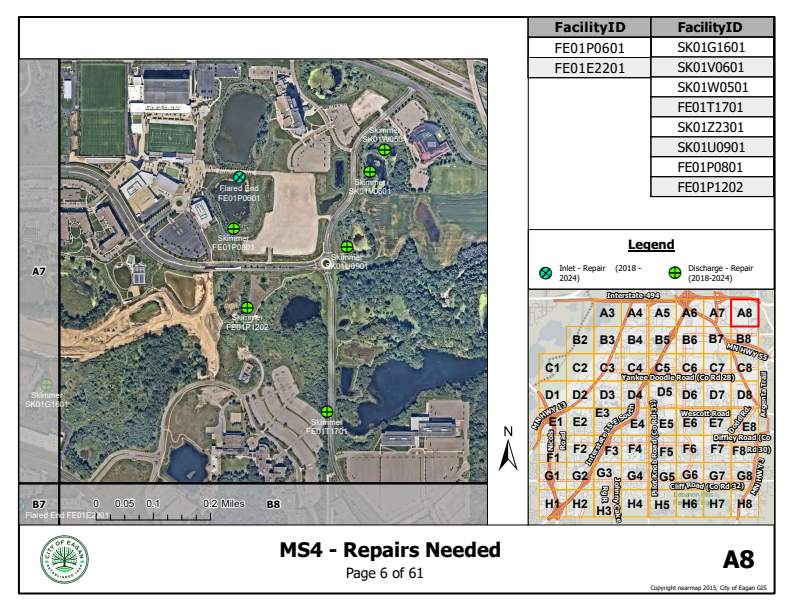

Project overview
What I created
I created a series of maps illustrating MS4-related repair information. The goal was to organize geographic data into clear map layouts that make individual locations and relevant details easier to review.
My role
I designed and created the entire map series myself, including the map layouts and final outputs.
Additional project image
More from this project
This second example provides another look at the completed work.

MS4 map series — repair map example two